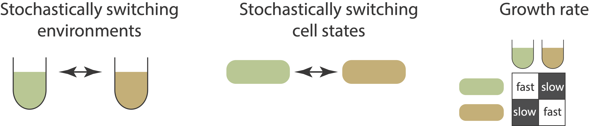
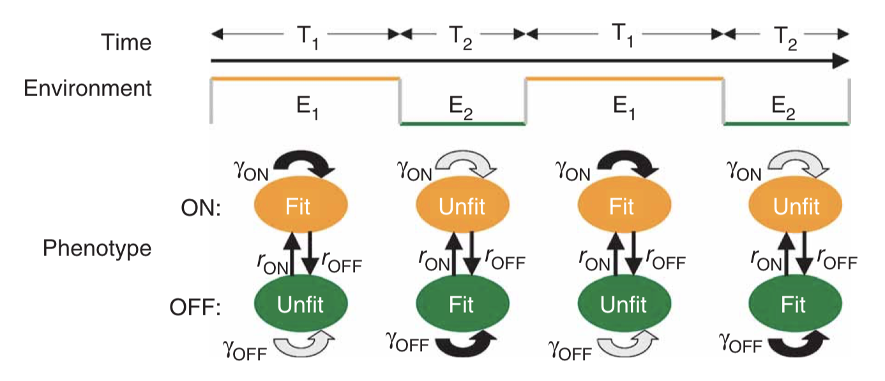
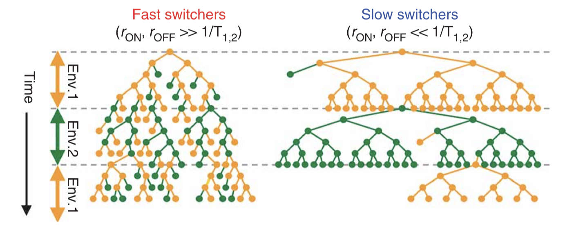
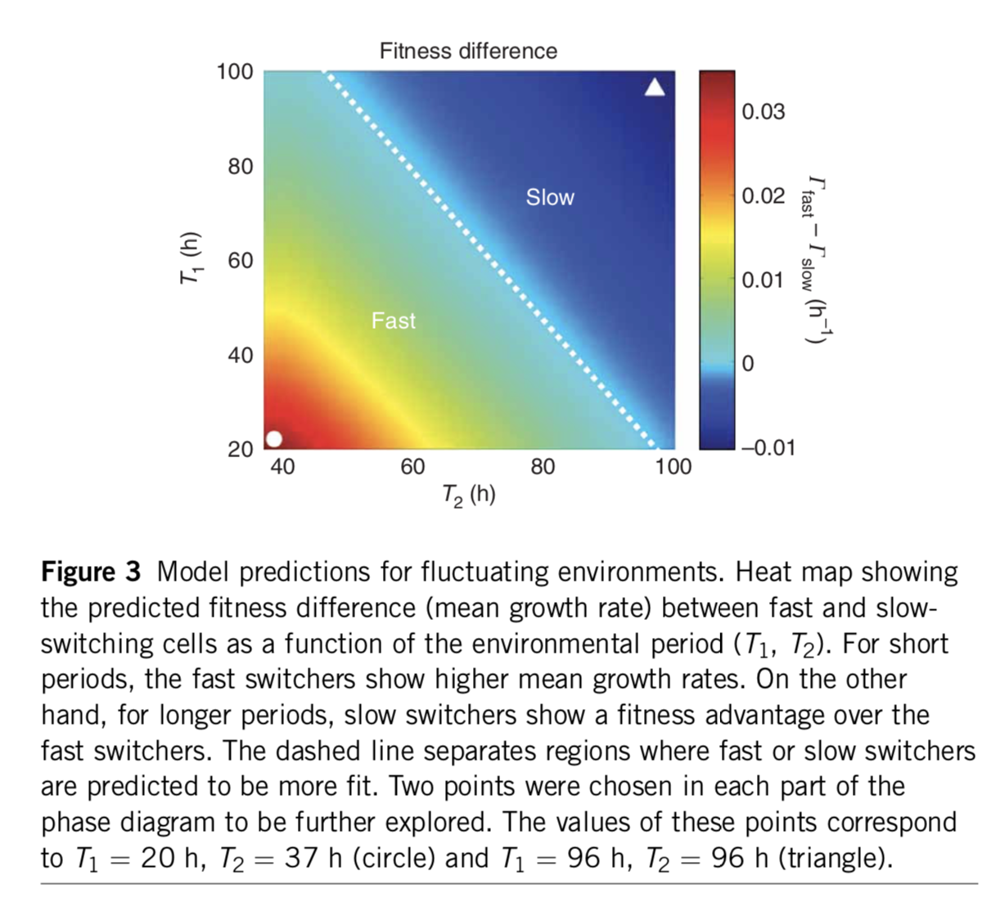
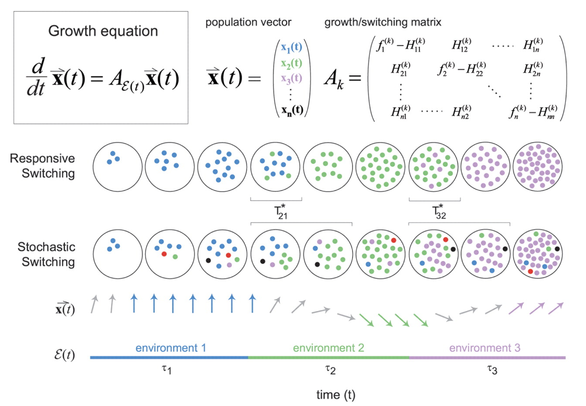
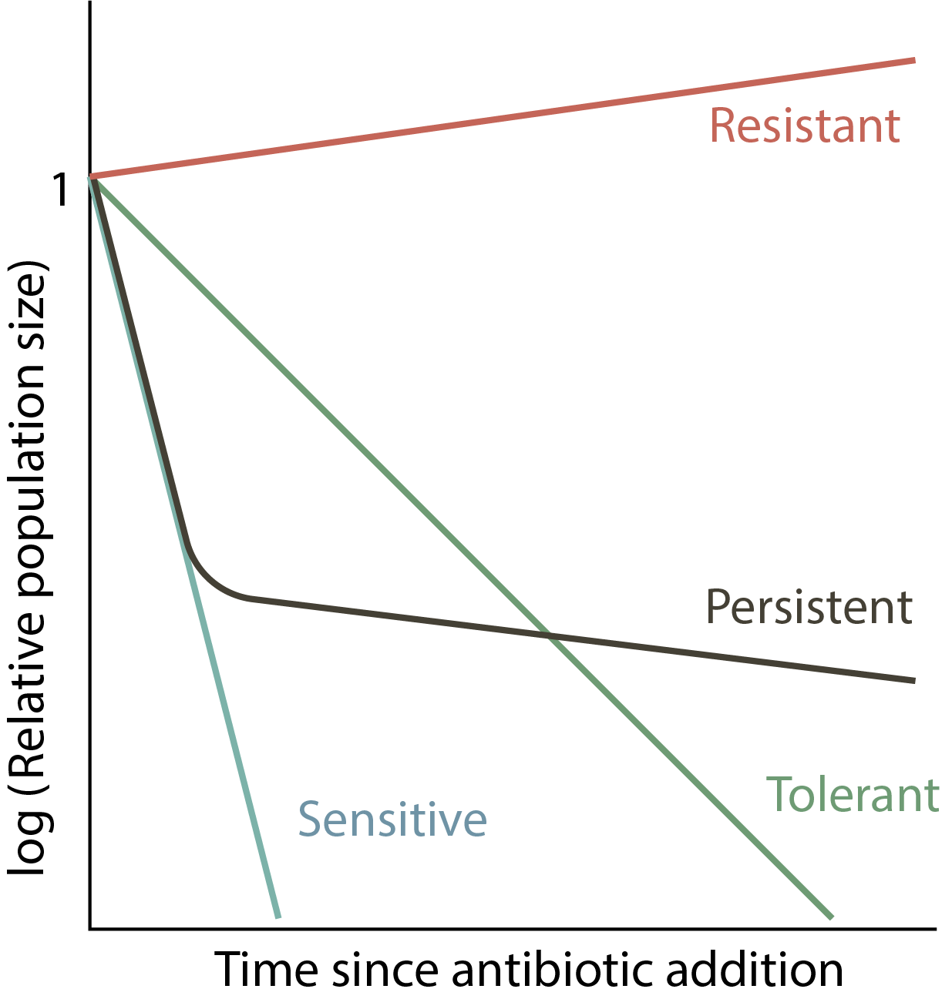
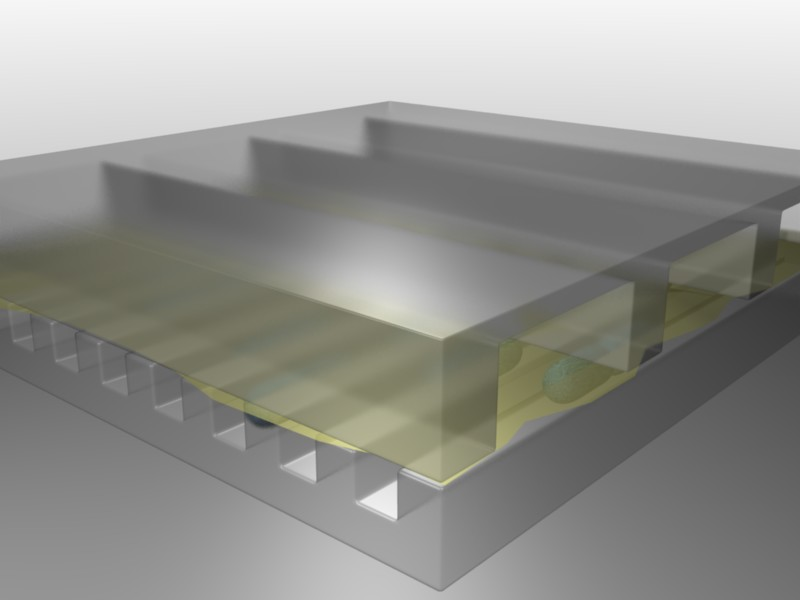
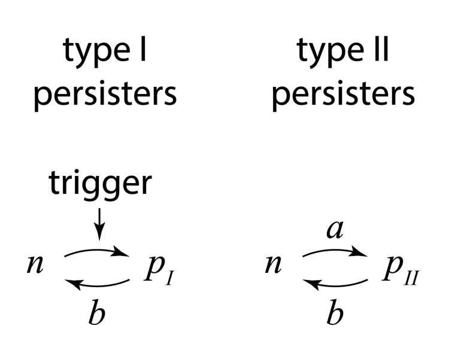
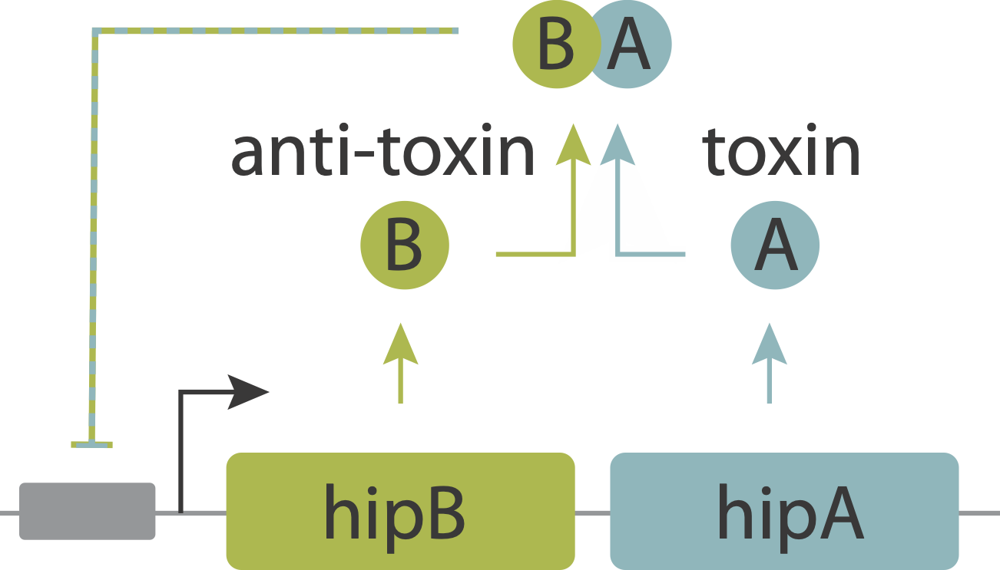
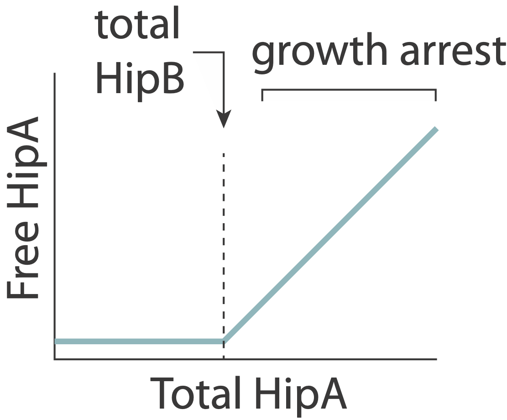

Code
import numpy as np
import iqplot
from biocircuits.viz import bokeh_show
import bokeh.io
import bokeh.plotting
bokeh.io.output_notebook()Design principle
Concepts
Techniques
import numpy as np
import iqplot
from biocircuits.viz import bokeh_show
import bokeh.io
import bokeh.plotting
bokeh.io.output_notebook()Survival in an uncertain world requires adaptability and anticipation, the complementary abilities to respond to and prepare for change.
— Jeffrey N. Carey and Mark Goulian, “A bacterial signaling system regulates noise to enable bet hedging,” Current Genetics, 2019.
In the past two chapters, we have studied noise, how it arises, how to quantify it, and how if impacts the dynamics of biological circuits. There is a natural tendency to think of noise as a defect since it makes circuit operation less precise. In electronics, engineers have succeeded in largely suppressing the effects of noise in computer circuits.
But can noise be a feature, as well as a bug?
Today we will start to explore how noise, in the context of biological circuits, can provide critical enabling capabilities for cells and organisms.
Consider a loose analogy between financial investing and bacterial survival. With a crystal ball that tells the future, you could maximize your wealth by investing all your cash in a single stock, the one you know will perform best over the period you care about. It is a great strategy if you own a crystal ball. For the rest of us, it is not possible to predict how any stock will perform, and which ones will collapse entirely. The value of any stock may depend not only on the underlying strength of the company but also on all sorts of extraneous factors including interest rates, pandemics, wars, not to mention the effects of other investors trading strategies. Given all of the uncertainty, most investors seek to diversify their assets across multiple investments, hoping that the strong performers more than compensate for disappointments, and no single failure will eliminate the whole portfolio. This strategy is a form of bet hedging.
Bacteria face a similar challenge. Individual cells can exist in a variety of physiological states, each of which may be better adapted to some potential future environments, but less well adapted to others. A bacterial cell that accurtely anticipates the environment it will soon face can proliferate more rapidly than its relatives. By contrast, if it finds itself in the wrong state, it may grow more slowly or not survive the coming environmental change at all. Over billions of years, bacteria have evolved mechanisms that allow them to anticipate future conditions. Nevertheless, just as future stock prices are hard to predict even for an expert investor, so too are environmental fluctuations. A poor little bacterium doesn’t stand a chance of accurately predicting future temperature, salt, toxins, antibiotics, and attacking immune cells all by itself. Instead, it uses a form of biological bet hedging, in which the shared genome of a clonal cell population effectively spreads its bets, in the form of individual cells, across multiple physiological states, each adapted to a different possible future.
Today, we seek to gain some insight into how bacteria bet hedge. We will imagine that we are designing the stress response system for a custom, designer super-bacterium. Our goal is to maximize its survival and proliferation. To help it out, we provide it with an array of sensors, information processing circuits, and responses—exactly the sorts of circuits we have been studying.
But now we will also give it a special power: a kind of “random number generator” that operates independently in each individual cell. The ability to generate random behaviors allows genetically identical cells to do different things in the same environment, controlling the probability of each choice, but not the outcome. What kind of random number generator is this? The answer is…noise! We have just learned that cells generate randomness in gene expression through intrinsically stochastic bursts of protein production. Other biochemical reactions are similarly noisy at the scale of the cell. Together, these noise sources enable cells to implement probabilistic strategies, by controlling the fraction of cells in the population that are in one state or another, that is, by hedging their bets.
The goal of this chapter is to explain how probabilistic circuits can be beneficial for cells living in unpredictable environments.
First, to gain some general insights into principles of betting, we will kick off with the classic theory of proportional gambling, or “Kelly betting,” described by John Kelly in 1956, following the treatment in this lecture by Thomas Ferguson at UCLA.
Next, we will consider the simplest biological problem, optimizing bacterial growth when the environment can switch unpredictably between two states.
We will then extend this discussion to systems with multiple states and multiple corresponding environments, to see if and when a purely probabilistic strategy can outperform one based on direct sensing of the environment.
Finally, we will highlight the particular phenomenon of antibiotic persistence, which presents a biomedically important example in which bacterial bet-hedging plays out.
Let’s start with the simplest betting game one can imagine: Each day you get to make a bet. The odds of winning are always the same and, unlike in Vegas, they are in your favor, with your probability of winning, \(p\) , better than even: \(p>0.5\) .
All you have to decide is how much you want to bet each day. \(b_k\) denotes the amount of your \(k\)th bet. It could range from 0 to your total fortune before the bet, denoted \(X_{k-1}\). That is \(0\le b_k \le X_{k-1}\).
If you win or lose the bet, you gain or lose \(b_k\) dollars, respectively.
\[ \begin{align} X_k = \begin{cases} X_{k-1} + b_k & \textrm{ with probability } p \\[1em] X_{k-1} - b_k & \textrm{ with probability } 1-p \end{cases} \end{align} \tag{18.1}\]
Suppose you start off with $ X_0 = $. How much of this money should you bet? Take a moment to think about it.
Because \(p> \frac{1}{2}\), the bet that will maximize the average return, or “expectation value,” of a single bet would be everything: \(b_k=X_{k-1}\).
If you won every single bet, your wealth would increase, after \(k\) bets by a factor of \(2^k\). However, the probability of winning \(k\) bets in a row, \(p^k\), is low even when \(p\) is high. For instance, with \(p=0.8\), you have less than a 1.5% chance of surviving 20 rounds. This is the phenomenon known as gambler’s ruin.
Since the odds are in your favor here, there ought to be a better strategy, one that provides strong returns but also limits the risk of ruin. We still want to maximize the expected return but we want to do so in a way that will not lead to ruin. The intuition is that we want to maximize the geometric mean, rather than the standard mean, of the return.
To implement this, consider a proportional betting scheme: Each day, you choose the size of your bet in proportion to the amount of money you have: \(b_k = f X_{k-1}\), where \(0<f<1\) denotes the fraction of total wealth you bet on each round. In this scheme, even if you lose, you retain some fraction of your money, and survive to play another day.
What is the best value of \(f\) to use in this scheme? Ideally, you would choose the value that maximizes the rate of increase of your wealth. Let’s consider one particular “run” of \(n\) bets, in which you won \(Z_n\) times and lost \(n-Z_n\) times. After this run, your wealth has now changed from \(X_0\) to
\[ \begin{align} X_n = X_0 (1+f)^{Z_n}(1-f)^{n-Z_n}. \end{align} \tag{18.2}\]
Of course, each run will be different depending on \(Z_n\). The distribution of possible \(Z_n\)’s is binomial; \(Z_n \sim \text{Binom}(n,p)\).
We can express expected fold change in wealth.
\[ \begin{align} \frac{\langle X_n\rangle}{X_0} = \langle (1+f)^{Z_n}(1-f)^{n-Z_n}\rangle, \end{align} \tag{18.3}\]
Here, the angle brackets \(\langle \cdot \rangle\) denote the mean over all possible outcomes. This expression is in general difficult to calculate analytically. (We will do so by sampling out of the distribution of \(Z_n\) momentarily.) We can, however, compute the expected logarithm of the fold change in wealth.
\[ \begin{align} \left\langle \ln \frac{X_n }{X_0}\right \rangle &= \left\langle Z_n \ln (1+f) + (n - Z_n)\ln (1-f) \right\rangle \\[1em] &= n\ln (1-f) + \langle Z_n \rangle \, [\ln (1+f) - \ln (1-f)] \\[1em] &= n\left[p \ln (1+f) + (1-p) \ln (1-f)\right], \end{align} \tag{18.4}\]
where in the last line we have used the fact that \(Z_n\) is Binomially distributed, so \(\langle Z_n \rangle = np\). We thus expect an exponential growth in wealth,
\[ \begin{align} \mathrm{e}^{\langle \ln X_n\rangle} = X_0\,\mathrm{e}^{r n}, \end{align} \tag{18.5}\]
where the growth rate is
\[ \begin{align} r = p \ln (1+f) + (1-p) \ln (1-f). \end{align} \tag{18.6}\]
This expression may remind you of Shannon’s information—in fact, Kelly’s 1956 article explores this connection and extends this analysis to many other interesting examples and connections.
Now we can answer the critical question: what is the optimal bet, \(f\)? To do so, just solve \(\frac{\mathrm{d}r}{\mathrm{d} f}=0\) to find the value of \(f\) that maximizes the exponential growth rate. The result is
\[ \begin{align} f_{opt} = \begin{cases} 2p - 1 & p > 1/2,\\[1em] 0 & p \le 1/2. \end{cases} \end{align} \tag{18.7}\]
p = np.arange(0, 1, 0.05)
fopt = 2 * p - 1
fopt[np.where(fopt < 0)] = 0
pl = bokeh.plotting.figure(
frame_width=350, frame_height=250, x_axis_label="probability of win, p", y_axis_label="optimal fractional bet, f",
)
pl.line(p, fopt, line_width=2)
bokeh_show(pl)For example, with a modest advantage like \(p=0.55\), you would bet 10% each time. With a larger advantage like \(p=0.9\), you could bet 80%. * What if the odds are unfavorable? If \(p<\frac{1}{2}\), you are better off not betting.
Another way to think about this: if you try to naively optimize the expected arithmetic mean of winnings, you find it is maximal when you bet everything, but this strategy inevitably fails catastrophically once there is even a single loss. It makes more sense to optimize the geometric mean (\(\sqrt[n]{x_1...x_n}\)) of the betting outcomes. Because the geometric mean involves a product of outcomes, it eliminates strategies that produce a complete lost. Maximizing the geometric mean is equivalent to maximizing the expectation value of the log of total wealth, as described above.
Kelly explains the conditions under which this strategy is to be preferred, and when it is not:
The gambler introduced here follows an essentially different criterion from the classical gambler. At every bet he maximizes the expected value of the logarithm of his capital. The reason has nothing to do with the value function which he attached to his money, but merely with the fact that it is the logarithm which is additive in repeated bets and to which the law of large numbers applies. Suppose the situation were different; for example, suppose the gambler’s wife allowed him to bet one dollar each week but not to reinvest his winnings. He should then maximize his expectation (expected value of capital) on each bet. He would bet all his available capital (one dollar) on the event yielding the highest expectation. With probability one he would get ahead of anyone dividing his money differently.
See Tom Ferguson’s lecture for other interesting extensions and applications. For example, this result can be generalized to the case where the probabilities change with time. In that case, each round one just replaces \(p\) with \(p_k\). It can also be generalized to cases in which there are multiple outcomes, like a horse rase. In this case, the optimal straetgy involves betting on each horse in proportion to its odds of winning.
We worked out the expectation value of the logarithm of wealth. We might also be interested in learning about how individual outcomes of Kelly betting might play out and to gather information about the distribution of outcomes. To that end, we can simulate Kelly betting games. We do so below, starting with \(X_0 = 1\) and betting 100 rounds, with \(p = 0.6\), giving an optimal betting strategy of \(f = 2p-1 = 0.2\).
def kelly_bet(X, p, f):
"""Make a single bet using a Kelly strategy."""
if np.random.random() < p:
return X * (1 + f)
else:
return X * (1 - f)
def kelly_bet_series(X0, p, f, n_rounds):
"""Perform a series of Kelly bets."""
X = np.empty(n_rounds + 1)
X[0] = X0
for i in range(n_rounds):
X[i + 1] = kelly_bet(X[i], p, f)
return X
# Kelly bets with 1 initial wealth points
X0 = 1
p = 0.6
f = 0.2
fbad1 = 0.1
fbad2 = 0.35
n_rounds = 100
n = np.arange(n_rounds + 1)
# Perform 10000 betting series
bets = np.array([kelly_bet_series(X0, p, f, n_rounds) for _ in range(10000)])
betsbad1 = np.array(
[kelly_bet_series(X0, p, fbad1, n_rounds) for _ in range(10000)]
)
betsbad2 = np.array(
[kelly_bet_series(X0, p, fbad2, n_rounds) for _ in range(10000)]
)
# Theoretical growth rate
r = p * np.log(1 + f) + (1 - p) * np.log(1 - f)
# Plot 100 betting series overlaid with expectations
pl = bokeh.plotting.figure(
width=550,
height=400,
y_axis_type="log",
x_axis_label="n",
y_axis_label="riches",
)
for i in range(100):
pl.line(n, kelly_bet_series(X0, p, f, n_rounds), alpha=0.2)
pl.scatter(n, np.mean(bets, axis=0), color="orange", legend_label="〈Xn〉")
pl.scatter(
n,
np.exp(np.mean(np.log(bets), axis=0)),
color="purple",
legend_label="exp(〈ln Xn〉)",
)
pl.line(
n,
X0 * np.exp(r * n),
line_width=2,
color="tomato",
legend_label="X0 exp(rn)",
)
pl.legend.location = "top_left"
pl.line(
n,
np.exp(np.mean(np.log(betsbad1), axis=0)),
color="green",
line_width=1,
legend_label="f=0.1: exp(〈ln Xn〉)",
)
pl.line(
n,
np.exp(np.mean(np.log(betsbad2), axis=0)),
color="black",
line_width=1,
legend_label="f=0.3: exp(〈ln Xn〉)",
)
bokeh_show(pl)Each series of bets is shown in a blue line, with the computed and theoretical expectation values shown. On average, wealth grows, but losses still occur. The green and black lines show suboptimal bets that are either too high or too low – with suboptimal results. You can play with this code to convince yourself that the optimal bet follows the analytical result.
It is also interesting to look at the distribution of outcomes after 100 rounds of betting by plotting the ECDF of the betting outcomes:
# Plot the ECDF (thinned, to limit the glyphs)
pl = iqplot.ecdf(
bets[::10, -1],
x_axis_type="log",
x_axis_label="riches",
style="staircase"
)
bokeh_show(pl)The tail to the left, below 1, represents a net loss about 12% of the time, while the larger density above 1 shows we are more likely to win, and even win big (note that the x-axis is on a logarithmic scale).
The key point here is that even when outcomes are unpredictable, there can be optimal betting strategies. Over billions of years, evolution may have found those strategies.
We now return to biology and ask how a population of cells can use probabilistic strategies to survive and even thrive in unpredictable environments. There are many systems in which this appears to happen:
The simplest stochastic state switching system we can imagine is one with two environments and cell types, with each cell type better adapted to a distinct environment:

Thattai and van Oudenaarden (Genetics, 2003) considered a minimal example in which cells can switch between two distinct states, each optimized for growth in one of two possible environments. They assumed that both the environment and the cells switch stochastically between their respective states. However, the cell is assumed not to directly sense the environment it is in. Similar to the Kelly betting example above, the cell knows something about the probabilities of different environments, can control its own switching rates, but cannot predict precisely when the environment will change.
In a subsequent paper, Acar et al, (Nature Genetics, 2008), the same group constructed an experimental realization of this situation in yeast. This system took advantage of the fact that the galactose utilization circuit in yeast contains a positive feedback loop that produces two metastable states – a version of the bistable positive autoregulatory circuits we have examined previously. Cells were observed to switch stochastically between these two states. Further, by varying the concentration of galactose in the media and the expression level of a key protein in the circuit, the authors were able to engineer two different yeast strains that showed stochastic switching between the two states at distinct rates.

A minimal two-state system, from Acar et al, Nature Genetics, 2008; Figure 1a.
The key physiological parameters here are the switching rates, i.e. the probability per unit time that an individual cell switches from one state to the other. If the switching rate of the cell is much faster than the switching rate of the environment, then one would tend to have a mixed population of cells, as shown in the next figure on the left. On the other hand, if the cells switch infrequently compared to the rate of environmental change then one would have the situation on the right:

Taken from Acar et al, Nature Genetics, 2008; Figure 1b.
The most basic question one can ask about such a system is: Given the environmental switching rate, and the growth rate (fitness) of each state in each environment, what are the optimal cellular switching rates?
To address this question, we construct a population dynamic model. That is, we write down differential equations for the number of cells, or the number of cells in each state, rather than for the number of proteins in the cell, as we have been previously. Just as proteins can be synthesized and diluted/degraded, so too cells can proliferate and dilute/die. However, a key difference between the level of cell populations and the level of molecular concentrations is that the rate of proliferation (at least in the exponential growth regime, far below the ‘carrying capacity’ of the environment), is proportional to the amount of cells one already has, rather than a constant production term as we have for protein expression.
We write down a minimal model for two cellular states. For simplicity, we assume a symmetry: state 0 is equally as fit in environment 0 as state 1 is in environment 1. There are then only two (rather than four) growth rates we have to think about: the growth rate of either type of cell in its more (\(\gamma_1\)) or less (\(\gamma_0\)) fit environment. The other cellular parameters are the rates of switching from the more fit to the less fit state (\(k_0\)), or vice versa (\(k_1\)).
\[ \begin{align} \frac{dn_0}{dt} &= \gamma_0(E) n_0 -k_1 n_0 + k_0 n_1 \\[1em] \frac{dn_1}{dt} &= \gamma_1(E) n_1 +k_1 n_0 - k_0 n_1 \end{align} \tag{18.8}\]
The overall growth rate, which we take to be the fitness, is calculated as the growth rate of the total population size, \(n=n_0+n_1\):
\[ \begin{align} \gamma &= \frac{1}{n} \frac{dn}{dt} \\[1em] &=\frac {\frac{dn_0}{dt}+\frac{dn_1}{dt}}{n_0+n_1} \end{align} \tag{18.9}\]
Analyzing this model shows that the optimal switching rate depends on the switching rates of the environment. In this paper, the authors compare to a specific experimental realization of this system in two yeast strains that have been engineered to switch at different rates. As shown here, the difference in mean growth rates between the fast and slow switching strains depends on the switching rates of the environment:

A minimal two-state system, from Acar et al, Nature Genetics, 2008. The color scale shows the difference in predicted growth rates between fast switchers and slow switchers, whose switching rates were fit to those observed in an experimental system.
The authors conclude:
Our data suggest that tuning phenotypic switching rates may constitute a simple strategy to cope with fluctuating environments. Following this strategy, an isogenic population would improve its fitness by optimizing phenotypic diversity so that, at any given time, an optimal fraction of the population is prepared for an unforeseen environmental fluctuation. The diversity is introduced naturally through the stochastic nature of gene expression, allowing isogenic populations to mitigate the risk by ‘not putting all of their eggs in one basket’. Recent work suggests that in an adverse environment, cell-to-cell variability can have an impact on the fitness of a population…. Here we show that, in fluctuating environments, it is the frequency of the environmental fluctuations that constrains the inter-phenotype transition rates. In particular, we demonstrate a possible mechanism for a population to enhance its fitness in fluctuating environments by tuning the phenotypic switching rates with respect to the duration of exposures to alternating environments. This ‘resonant’ condition provides an effective survival strategy by ‘blindly’ anticipating environmental changes. This strategy could be used by cellular populations that lack dedicated signal transduction machinery for particular extracellular signals, or when it is crucial for a population to act at a faster timescale than is possible by signal transduction.
Stochastic switching can thus be a good strategy when cells are unable to detect the environment or detect it fast enough. But could it ever outperform a “smarter” strategy based on directly sensing and responding to the environment the cell is in?
So far we have considered a “blind” stochastic switching strategy. However, a more obvious and straightforward solution is to directly sense the current environment and respond by switching the cell into the correct state. This strategy requires that cells express specific sensors for a broad variety of conditions, many of which they may only rarely encounter. Nevertheless, cells do sense and respond to a wide variety fo environmental conditions.
Which is better: stochastic or responsive switching? Kussell and Leibler approached this problem in an elegant paper (Science, 2005), where they directly compared responsive and stochastic switching strategies. They set up the problem in the following way:
Environment dynamics. First, imagine a set of different environments, each of which lasts for a random, exponentially distributed, time, before transitioning to another environmental state. The \(i^{th}\) environment has a mean lifetime, \(\tau_i\). Now, allow a probabilistic alternation among environments, characterized by a matrix of environment switching rates, with \(b_{ij}\) denoting the probability of switching to environment \(i\) from environment \(j\). While each environment has some characteristic duration, and some likelihood of switching to each other environment, the exact sequence of environments experienced by any given cell is random.
Cell state dynamics On the cellular side, they similarly allowed a parallel set of distinct physiological states or phenotypes, each of which can, in general, have a specific growth rate in each of the environments. A matrix, \(H_{ij}^k\) describes the rate at which cellular state \(j\) switches to cellular state \(i\) in environment \(k\).
For stochastic switching, the \(H_{ij}\) values are independent of the environment because, by definition, the cell is simply ignoring the environment.
For responsive switching, the cell can “deliberately” switch to the optimal state in each environment. Without loss of generality, one can choose the fastest growing state in environment \(k\) to be the \(k^{th}\) state. One can then write that \(H_{kj}^{(k)} = H_m\), where \(H_m\) is a single switching rate, when \(j\ne k\), with all the other \(H_{ij}^{k}\) values set to 0. In other words, all cells try to switch to the best (\(k^{th}\)) state in each environment.

Figure taken from Kussell and Leibler, Science, 2005.
The dynamics are then described by a set of equations for the size of each cell state population, collected together in a cellular state vector, \(\mathbf{x}\). The dynamics of \(\mathbf{x}\) depend in turn on the environments, the switching rates, and the growth rates of each cell state in each environment, all collected together into the matrix \(\mathbf{A_k}\) as shown in the diagram above.
\[ \begin{align} \frac{\mathrm{d}\mathbf{x}}{\mathrm{d}t} = \mathbf{A_k} \mathbf{x} \end{align} \tag{18.10}\]
Each strategy incurs a different type of cost:
In the paper, the authors derive expressions for the growth rates in the two strategies:
Note the different costs that are incurred in the two strategies. Generally speaking, sensing is favored when the diversity costs would be high, sensing costs are low, and the environment is highly variable. By contrast, stochastic switching can be favored in regimes in which sensing costs are higher, and environments are stable over longer times. (These statements are made mathematically precise in the paper).
With these general ideas in mind, we will now turn to a fascinating and biomedically important phenomenon: antibiotic persistence.
When one adds antibiotics to a bacterial culture, they typically kill almost, but not quite, all of the cells. A small fraction of cells, termed persisters, survive. This occurs even when the bacteria are genetically identical. One explanation might be the occurrence of antibiotic resistant mutants – cells that have acquired heritable mutations making them insensitive to the antibiotic. But in many cases the cells that survive the antibiotic treatment turn out not to be resistant mutants. The way to see that is to grow them up in media lacking the antibiotic, and then again expose them to antibiotic again. If they were resistant, then all of this re-grown culture would survive. If the survivors are persisters, on the other hand, then the antibiotic again kills the vast majority of cells, and only the same tiny fraction of persisters again survives.
Persistence has often been a subtle phenotype. Recently, Balaban et al wrote a piece seeking to provide accurate and useful definitions of persistence.
Persistence is a major problem in many infectious diseases:
Persistence is not specific to bacteria. A similar phenomenon allows cancer cells to survive chemotherapeutics.
Survival curves provide a way to distinguish among several possible behaviors. Assuming antibiotics are added at time 0, a resistant mutant would continue to grow, while a sensitive population would exponentially die out. Tolerant mutants are still sensitive but die at a lower rate. Persistence is characterized by a biphasic survival curve: initially the population decays rapidly, similar to the sensitive population. However, the persistent subpopulation ultimately limits the killing, as shown schematically here.

There are different potential explanations for persistence:
The most direct way to visualize persistence is to look at it directly using time-lapse movies. Notice here the large variation in the time at which different cells start growing, even though they are all in essentially the same environment.
Balaban and Leibler (Science, 2004) used a microfluidic approach to film cells before, during, and after antibiotic treatment. The idea was to see whether the persistent state was already present prior to the antibiotic, or whether it was a response, in some cells, to antibiotic addition.

Figure taken from Balaban and Leibler, Science, 2004.
In this device, a predecessor to the mother machine we saw in a previous lesson, bacteria can grow in long channels embedded in PDMS, while media conditions can be rapidly changed. Using this device, one can then watch cells grow before, during, and after addition of an antibiotic, in this case ampicillin:
From these experiments, we can see directly that cells spontaneously switch to persistent states characterized by slow growth. These states are far less vulnerable to attack by ampicillin, which affects cell wall synthesis. After removal of antibiotics, these cells can resume growth.
Through the movies and many other experiments, the authors identified two types of persisters: Those that are formed in response to a triggering event, termed type I persisters, and those that are formed spontaneously, even in constant conditions, and even in the absence of the drug, termed type II persisters. They summarized the two types of behavior with this diagram:

Figure taken from Balaban and Leibler, Science, 2004.
Type I (“triggered”) persisters are formed at stationary phase, but not during exponential growth, unlike type II persisters, which form spontaneously even in exponentially growing cultures. From the experiments, they were also able to measure the effective transition rates, as shown above, both for wild-type cells and for so-called “hip” (high incidence of persisters) mutants that generate persisters at elevated frequencies. Interestingly, the two types of persisters do not differ only in the way in which they are generated. It also appeared that type II persisters are not fully growth arrested but rather still grow, albeit an order of magnitude more slowly than normal cells.
To describe the dynamics of persisters, they wrote down sets of ordinary differential equations for the numbers of normal cells, \(n\), and persisters, \(p\). (Here I will give the type II persister equations – the type I model is slightly different.)
\[ \begin{align} \frac{dp}{dt} &= a n -b p + \mu_p p \\ \frac{dn}{dt} &= -a n + b p + \mu_n n \end{align} \tag{18.11}\]
Note the similarities of this model to the one used above to describe switching dynamics in theoretical models as well as experimental yeast strains. As mentioned above, the exponential growth regime described here can only exist in specific laboratory conditions. In a real environment, cells would rapidly approach the carrying capacity of the environment.
Experiments measured the switching rates to be \(a=1.2±0.2 \times 10^{-6}\) per hour and \(b=0.1 ± 0.05\) per hour for wild-type E. coli in the conditions used, with a hipQ mutant increasing the frequency of persisters with an elevated rate of switching into the persister state, \(a=1.0±0.2 \times 10^{-3}\) per hour. The recovery rate, \(b\), was estimated to be somewhere in the range of \(10^{-7} - 10^{-4}\) per hour.
So far, we have seen that probabilistic “bet-hedging” strategies can be advantageous under some conditions, with antibiotic persistence providing an ideal example of such a strategy. But how is persistence implemented by underlying molecular circuits? When discussing molecular titration, we learned that the hip persistence system is based on a toxin-antitoxin module. A thorough recent review of this fascinating topic can be found here.
Toxin-antitoxin modules usually consist of a two gene operon. One gene codes for a toxic protein that inhibits cell growth. The other codes for an antitoxin that binds to and inhibits the first protein. In some cases, the toxin is more stable than the antitoxin. Many naturally occurring plasmids (circular, self-replicating DNA molecules) contain such toxin-antitoxin modules. If the plasmid is lost from a cell, the antitoxin rapidly degrades, leaving the toxin, and thereby killing the cell. In this way, the plasmid ensures that once it enters a cell, none of that cells descendants can survive without it. While prevalent on plasmids, toxin-antitoxin modules also appear on bacterial chromosomes. Mycobacterium tuberculosis has more than 80 of them! Because they are thus able to ensure their own survival without necessarily providing any benefit to the organism, they were often thought to represent “selfish” genetic elements.
These modules may function to induce stochastic episodes of persistence. If so, the role of the toxin protein would not be to kill the cell outright, but rather to slow or arrest its growth, reducing the cells susceptibility to antibiotics. More research is needed to understand whether persistence is indeed a primary function of these modules. However, analysis of the hip system has revealed a simple molecular circuit that could enable stochastic episodes of persistence.

In this system, the toxin, hipA, and the antitoxin, hipB, are expressed from a single operon. The two proteins form a complex that negatively autoregulates their own expression. Because the two proteins associate very tightly they operate in a molecular titration regime in which the the anti-toxin effectively “subtracts away” toxin molecules. The excess of HipA proteins over HipB proteins represents the amount of active toxin. At high enough levels, this free HipA can trigger a dormant, growth-arrested state. Cells exit from this state after long and broadly distributed lag times of hours to days.

A key prediction of this model is that varying HipB levels should tune the fraction of cells that enter the dormant state. More HipB should generate fewer persisters, and vice versa. By independently regulating HipB in cells, Nathalie Balaban and colleagues experimentally demonstrated that this is indeed the case. In a stochastic model, they further showed that for reasonable parameter values, stochastic fluctuations in the levels of the two proteins could generate subpopulations of cells in which HipA exceeds HipB, triggering persistent growth-arrested states.
Mutations can alter the frequencies of persisters in a population. This indicates that the key requirements for evolution of bet-hedging exist in this system: an ability probabilistically switch to a distinct state that grows faster or survives better in certain environments (in this case, with antibiotics), and the ability to control the stochastic rates at which cells switch between states. As I write this, single-cell transcriptome profiling is just emerging in bacteria (see this and this, both from former Caltechers), but could enable the discovery of many other low frequency cellular states, which, like the persisters discussed here, enable bacteria to hedge their bets.
Microorganisms face unpredictable environments. In this situation, a key strategy is to take advantage of stochastic noise within the cell to implement probabilistic survival strategies, analogous to bet-hedging. With the classic example of proportional betting, we can see how there can be optimal strategies when only the statistics of potential outcomes are known. Turning to microorganisms, we saw how a population can effectively hedge its bets by devoting different fractions of the population to different states, each optimized for different potential environments. In fact, stochastic switching strategies can even outperform seemingly better sense and respond strategies when there are high sensing costs and low diversity costs. Bacterial persistence represents a biomedically important natural case of bet-hedging. Persisters can form prior to antibiotic exposure, and enable survival of subsequent antibiotic treatments. Finally, we saw that toxin-antitoxin cassettes use the molecular titration and noise to provide a mechanism for persistence. Thus, we can see how circuits operating within individual cells can implement probabilistic strategies at the level of cell populations.
%load_ext watermark
%watermark -v -p numpy,bokeh,iqplot,jupyterlabPython implementation: CPython
Python version : 3.13.13
IPython version : 9.12.0
numpy : 2.2.6
bokeh : 3.9.0
iqplot : 0.3.7
jupyterlab: 4.5.6